▲ 제주 1100도로. 한라산 서쪽 어깨를 넘는 산악 횡단도로다
제주에서 차로 갈 수 있는 가장 높은 곳은 어디일까요. 답은 한라산 정상이 아닙니다. 정상은 걸어서만 갈 수 있습니다.
차로 오를 수 있는 최고점은 1100도로 위의 1100고지입니다. 이름 그대로 해발 1,100m 지점이고, 이 도로는 해수면 높이의 제주시에서 출발해 그 고도까지 올라갔다가 다시 바다 높이의 중문으로 내려옵니다. 왕복 두 시간이 안 되는 구간에서 고도차 1,100m를 두 번 통과하는 셈입니다.
1. 1100도로는 어떤 길인가
정식 명칭은 지방도 1100호선입니다. 제주시 노형동에서 시작해 한라산 서쪽 사면을 타고 올라간 뒤, 능선을 넘어 서귀포시 중문 방면으로 내려갑니다. 제주를 남북으로 관통하는 횡단도로는 몇 개가 있는데, 그중 가장 높은 곳을 지나는 것이 이 길입니다.
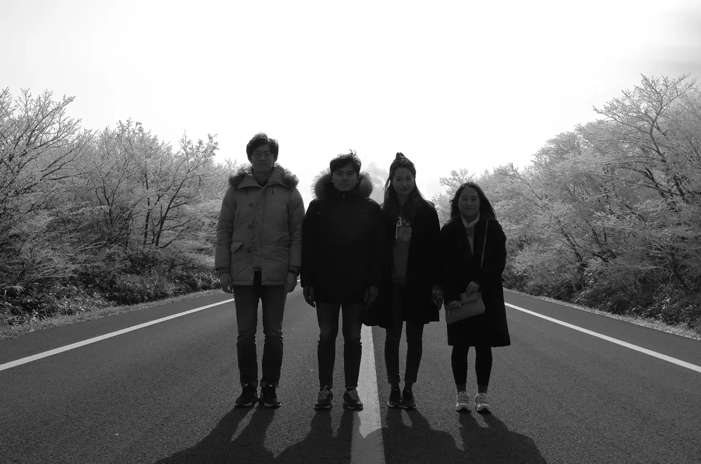
▲ 1100도로 직선 구간. 도로 양옆으로 활엽수림이 이어진다 ⓒ 비짓제주
이 도로의 성격은 "이동"보다 "통과"에 가깝습니다. 제주시와 서귀포를 오가는 가장 빠른 길은 아닙니다. 평화로나 번영로가 더 빠릅니다. 그럼에도 이 길을 택하는 이유는, 다른 길에서는 볼 수 없는 고도대의 식생과 지형을 차 안에서 통과하기 때문입니다.
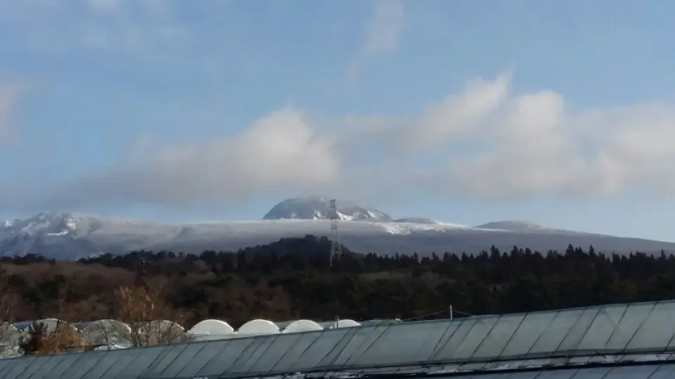
▲ 고도가 올라가면서 한라산 본체가 시야에 들어온다 ⓒ 비짓제주
고도가 오르면 식생이 바뀝니다. 산 아래쪽은 삼나무와 활엽수가 빽빽한 숲이지만, 1,000m를 넘어서면 나무 키가 낮아지고 관목과 초지가 늘어납니다. 시야가 트이는 구간이 이때부터 나옵니다.
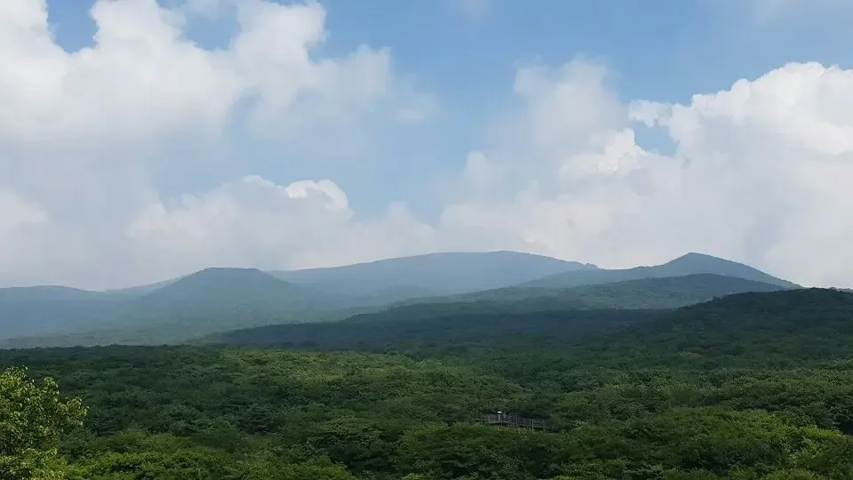
▲ 해발 1,000m를 넘어서면 수목 한계선에 가까워지며 시야가 트인다 ⓒ 비짓제주
2. 정상부의 람사르 습지
1100고지에는 습지가 있습니다. 해발 1,100m 산 위에 물이 고인 습지가 존재한다는 사실 자체가 특이합니다. 보통 습지는 저지대에 생기기 때문입니다.
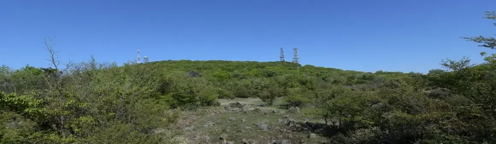
▲ 1100고지 습지 전경. 해발 1,100m 지점에 형성된 산지습지다 ⓒ 대한민국 구석구석(한국관광공사)
1100고지 습지는 2009년 람사르 습지로 등록됐습니다. 람사르 협약은 국제적으로 중요한 습지를 보전하기 위한 조약이고, 등록된다는 것은 그 습지가 국제 기준의 보전 가치를 인정받았다는 의미입니다. 제주에는 물영아리오름, 물장오리오름 등 여러 람사르 습지가 있는데, 1100고지 습지도 그중 하나입니다.
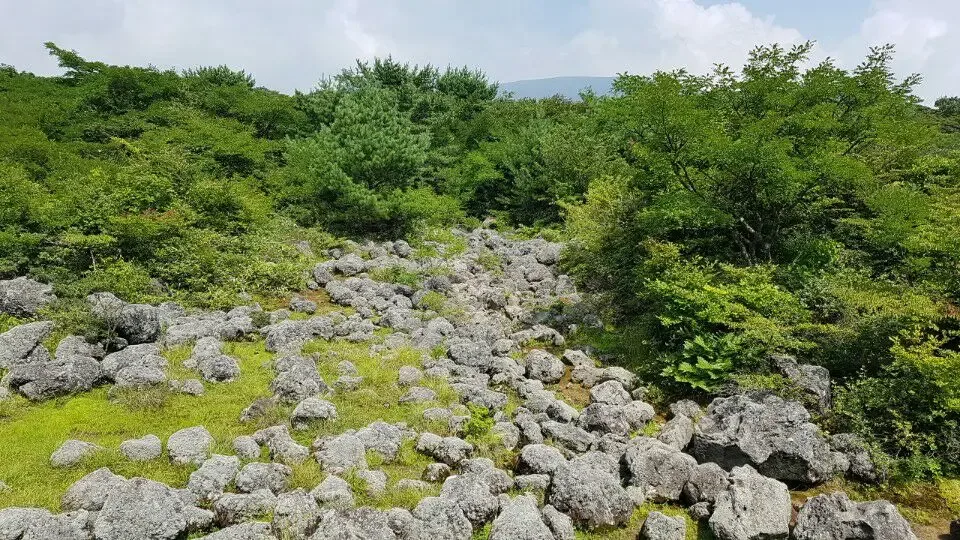
▲ 여름의 1100고지 습지. 화산암 사이로 습지 식물이 자란다 ⓒ 비짓제주
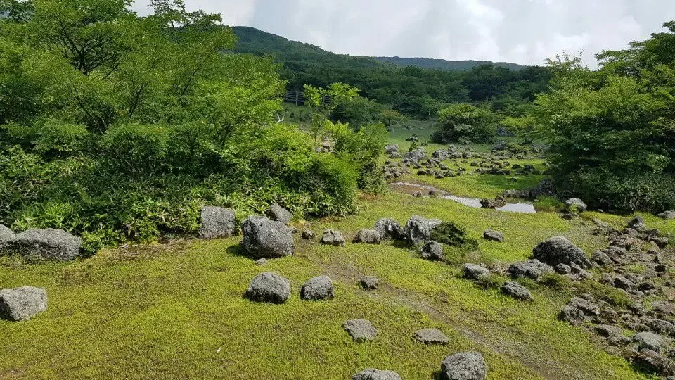
▲ 습지 주변 초지대. 나무가 자라지 못해 시야가 열려 있다 ⓒ 비짓제주
📍 산지습지가 왜 특별한가
저지대 습지는 강이나 바다에서 물을 공급받습니다. 산지습지는 그럴 수 없어 강수와 안개, 지형이 만든 배수 조건에만 의존합니다. 그래서 형성 조건이 까다롭고, 한번 훼손되면 복원이 어렵습니다. 탐방로를 벗어나지 말라는 안내가 붙는 이유입니다.
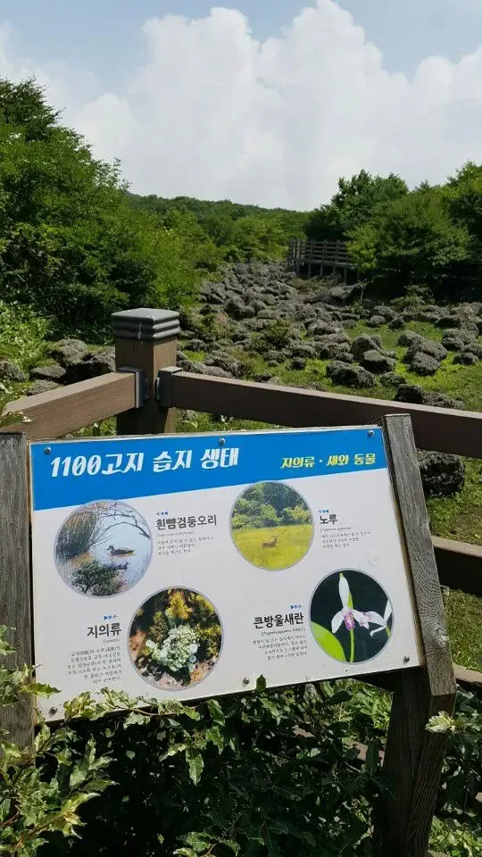
▲ 습지 입구의 안내판. 탐방 데크를 벗어나지 않도록 안내한다 ⓒ 비짓제주
3. 계절마다 다른 길이 된다
이 도로의 진짜 매력은 계절 편차입니다. 같은 구간을 계절마다 달리면 사실상 다른 길처럼 느껴집니다. 고도가 높아 산 아래와 기온 차가 크고, 그 차이가 풍경으로 그대로 드러나기 때문입니다.
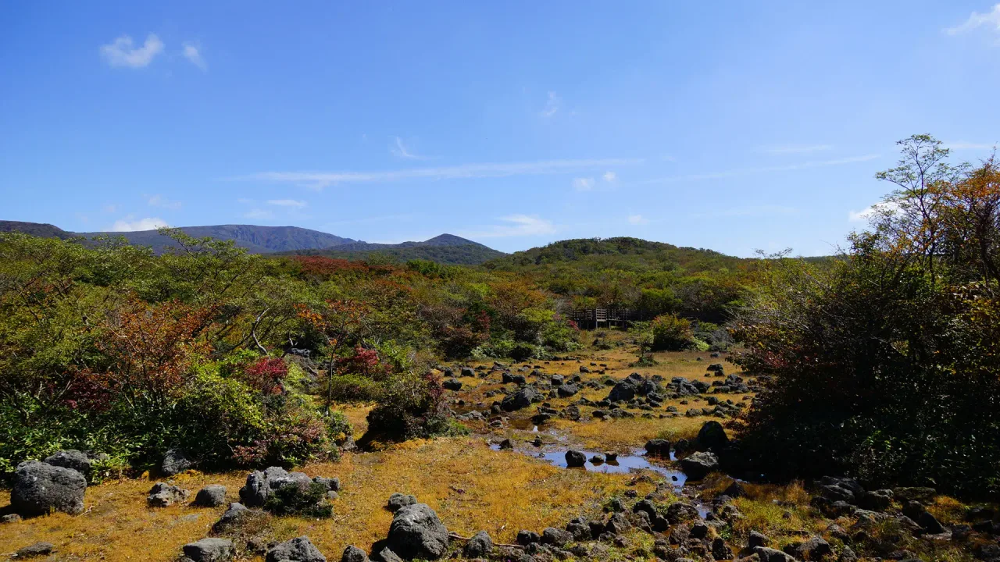
▲ 가을의 습지. 초지가 갈색으로 물들고 하늘이 맑아진다 ⓒ 비짓제주
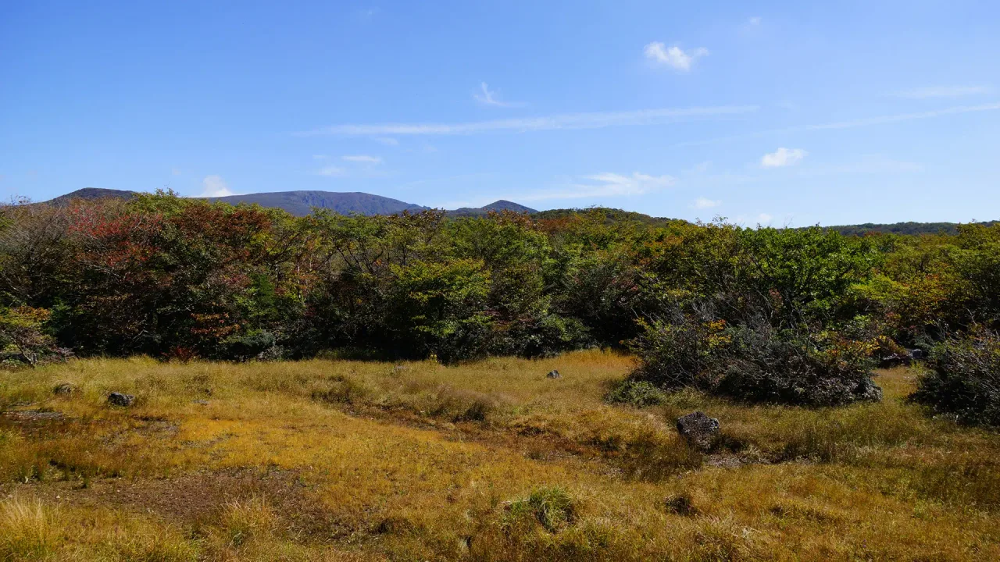
▲ 단풍이 든 습지 주변. 관목이 붉게 물든다 ⓒ 비짓제주
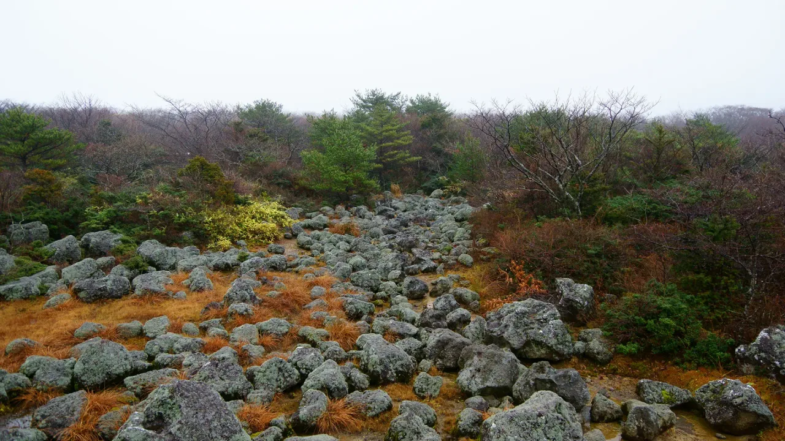
▲ 화산암이 드러난 습지 가장자리. 가을에는 이끼와 초본이 색을 바꾼다 ⓒ 비짓제주
겨울이 가장 극적입니다. 1100고지 일대는 안개가 잦은데, 기온이 떨어지면 이 안개가 나뭇가지에 얼어붙어 상고대가 됩니다. 산 아래 제주시는 비가 오는데 1100고지는 온통 하얀 날이 드물지 않습니다.
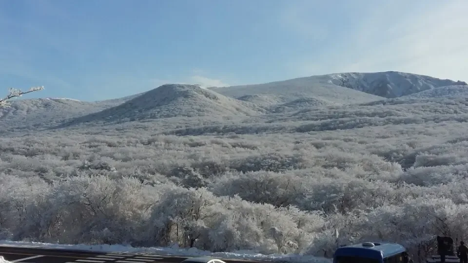
▲ 상고대가 덮인 1100고지 일대. 산 아래와 완전히 다른 풍경이 된다 ⓒ 비짓제주
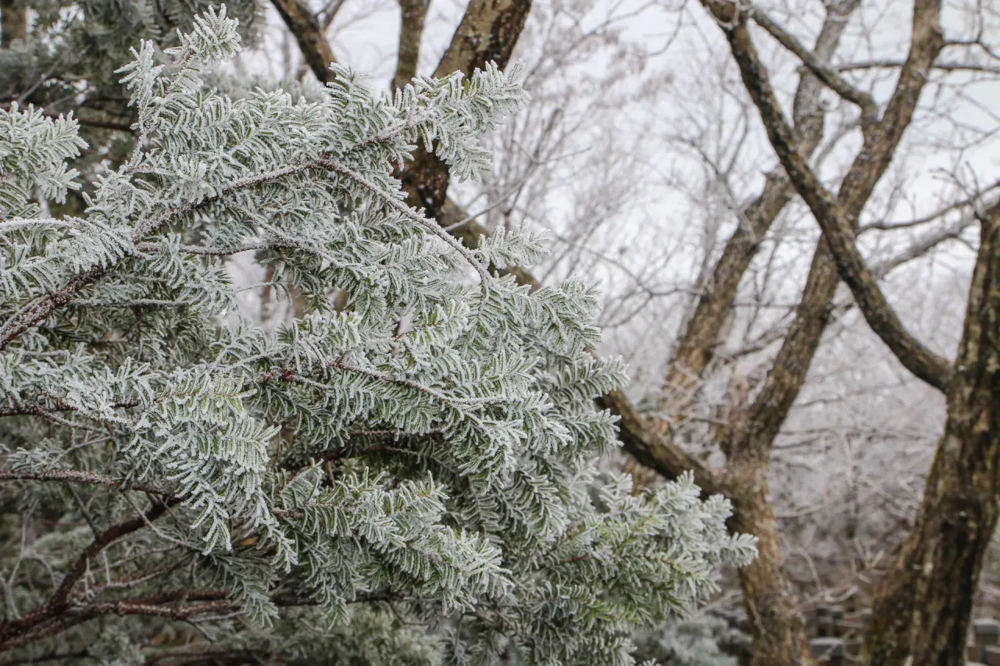
▲ 가지에 얼어붙은 상고대. 안개와 저온이 겹칠 때 만들어진다 ⓒ 비짓제주
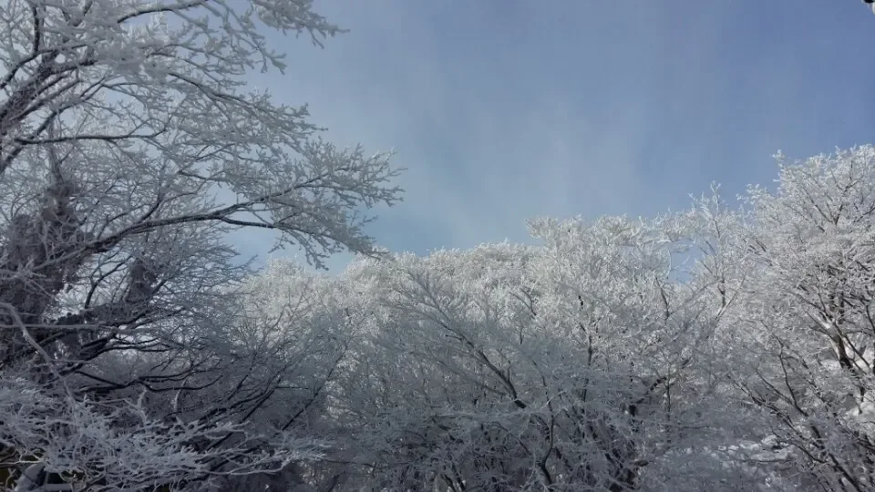
▲ 상고대가 숲 전체를 덮은 모습 ⓒ 비짓제주
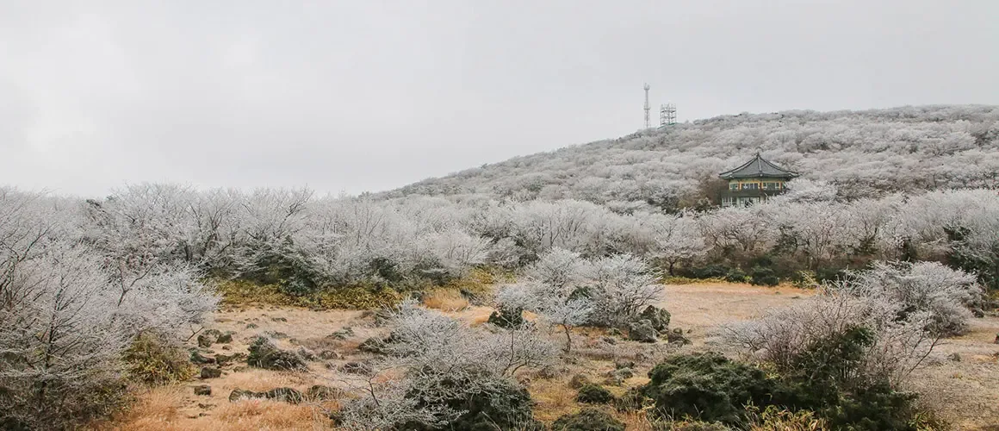
▲ 눈과 상고대에 둘러싸인 정자 ⓒ 비짓제주
4. 운전자가 실제로 마주치는 것들
풍경이 좋다는 말과 운전이 쉽다는 말은 다릅니다. 1100도로는 산악 도로이고, 고도를 빠르게 올리는 만큼 커브가 연속됩니다.
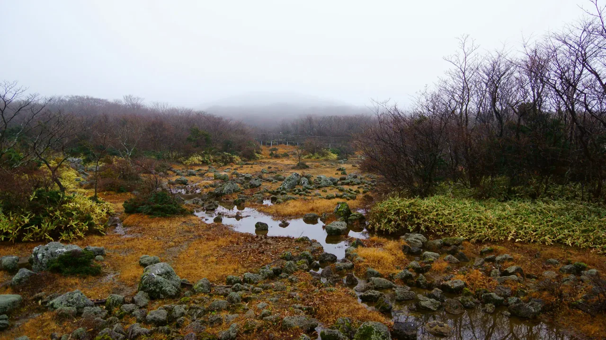
▲ 안개가 내려앉은 습지. 이 정도 안개는 도로에서도 흔하다 ⓒ 비짓제주
가장 자주 만나는 변수는 안개입니다. 해발 800m를 넘어서면 구름 속으로 들어가는 일이 잦습니다. 산 아래에서 맑았다고 정상부도 맑을 것이라 가정하면 안 됩니다. 안개 구간에서는 전조등을 켜고 속도를 낮추는 것이 기본입니다.
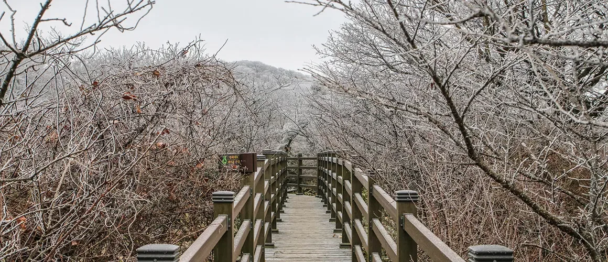
▲ 겨울 탐방 데크. 노면 결빙은 도로에서도 같은 조건으로 나타난다 ⓒ 비짓제주
겨울에는 결빙이 문제입니다. 기온이 영하로 떨어지면 노면이 얼고, 제주 렌터카 대부분은 사계절 타이어를 끼고 있습니다. 적설이나 결빙 시 스노체인 또는 겨울용 타이어 미장착 차량은 통제 대상이 됩니다. 겨울에 이 길을 계획한다면 렌터카 예약 단계에서 체인 대여 여부를 먼저 확인하는 편이 안전합니다.
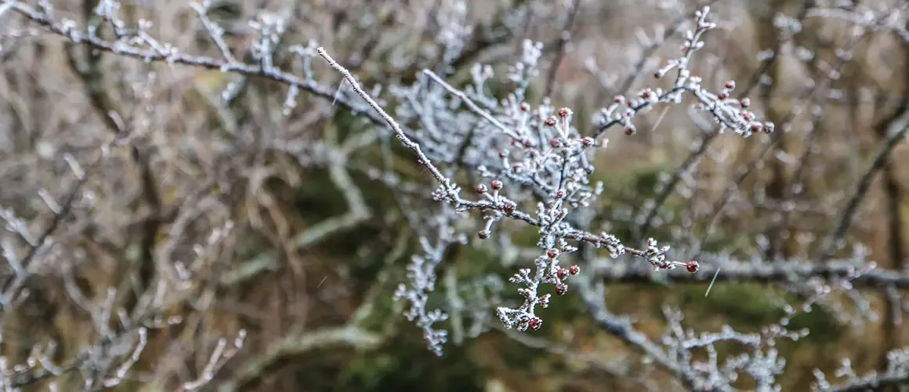
▲ 기온이 떨어지면 도로변부터 서리가 맺힌다 ⓒ 비짓제주
| 시기 | 주요 변수 | 대응 |
|---|---|---|
| 봄~초여름 | 안개, 노면 습기 | 전조등 상시 점등, 감속 |
| 여름 | 집중호우, 낙석 | 기상특보 확인 후 출발 |
| 가을 | 일교차, 이른 아침 서리 | 아침 시간대 감속 |
| 겨울 | 결빙, 적설, 상고대 | 체인 또는 겨울용 타이어 필수 |
5. 언제, 어떻게 가면 좋은가
가장 무난한 시간대는 오전입니다. 오후로 갈수록 구름이 올라와 정상부를 덮는 경우가 많습니다. 조망을 목적으로 한다면 이른 오전에 올라가는 편이 확률이 높습니다.
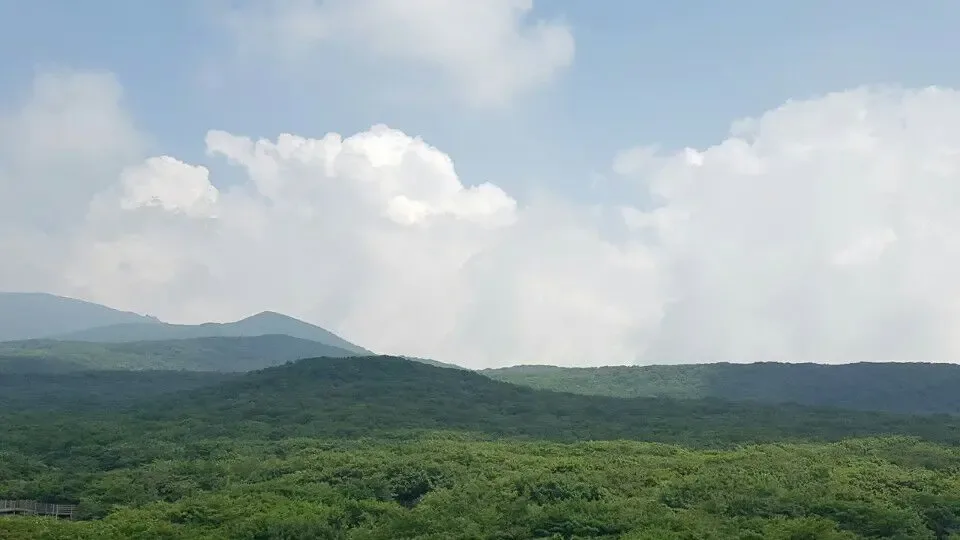
▲ 오후가 되면 구름이 능선까지 올라오는 경우가 많다 ⓒ 비짓제주
1100고지 휴게소에서 한 번 끊는 것을 권합니다. 습지 탐방 데크가 바로 옆에 있어 차에서 내려 20~30분이면 한 바퀴 돌 수 있습니다. 고도차로 인해 귀가 먹먹해진 상태를 푸는 데도 도움이 됩니다.
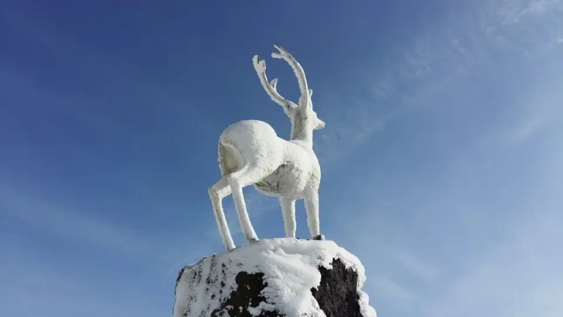
▲ 1100고지 휴게소 일대의 노루 조형물. 이 일대는 노루 서식지이기도 하다 ⓒ 비짓제주
야생 노루를 실제로 만날 수 있습니다. 이 일대는 노루 서식지이고, 도로로 뛰어드는 경우가 있습니다. 특히 새벽과 해질 무렵에 활동이 많아지므로 야간 주행이라면 상향등 사용과 감속이 필요합니다.
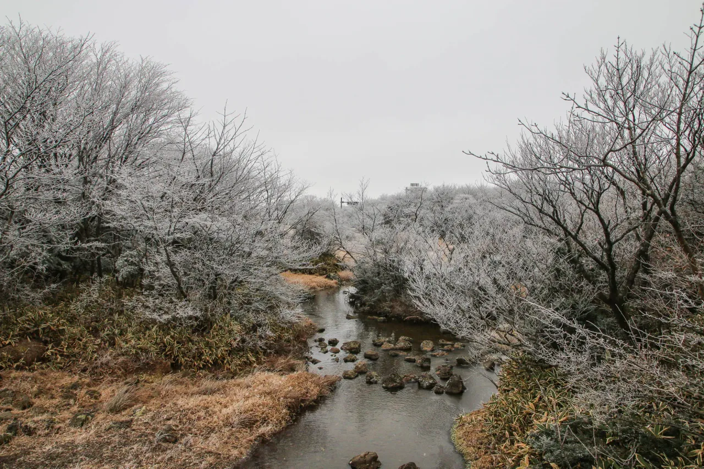
▲ 겨울 습지의 물길. 결빙과 해빙이 반복된다 ⓒ 비짓제주
연료와 화장실은 산 아래에서 해결하는 편이 낫습니다. 중간 구간에는 주유소가 없고, 휴게소 외에는 정차할 만한 시설이 거의 없습니다.
정리하면 이렇습니다. 1100도로는 빠른 길이 아니라 통과 자체가 목적인 길입니다. 오전에 출발하고, 정상부에서 한 번 끊고, 겨울이라면 타이어 조건을 먼저 확인하십시오. 그 세 가지만 지키면 제주에서 가장 밀도 높은 드라이브 구간이 됩니다.